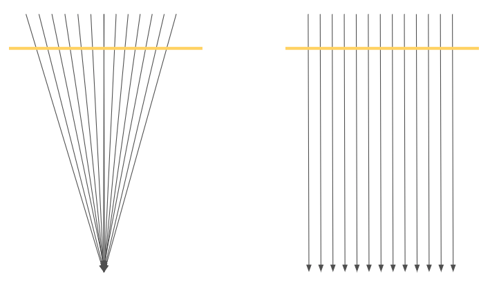
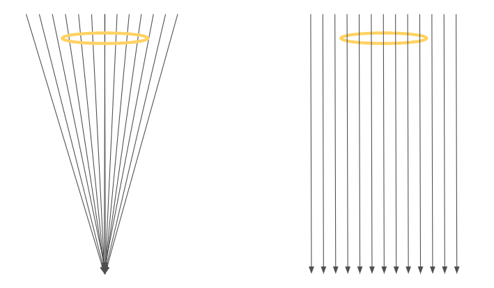

Gravitation
We claim that every matter particle eats up ether, acting as a sink for the ether particles.
Since ether is a gas-like object, a matter particle decreases the ether local density,
and thus pressure, enough to create a “wind” going into the particle.
Again, this is NOT a new rule! This phenomenon will be derived.
The rate of eating up ether, or strength of the sink, linearly depends on the mass (energy) of the particle.
The incoming wind created by a particle affects all other entities that live in the surrounding ether,
including free light beams and trapped light beam (other particles), pulling them into the first particle.
This is gravitation!
Let’s start with a simple state, having spherical symmetry.
This requires a motionless spherically symmetric particle at the center of a spherically symmetric
ether cloud (there is no such real particle according to our theory, but we will treat this as an approximation).
What might be a final steady state of ether flow? Using the rules of fluid mechanics for
“monatomic compressible ideal gas going through an isentropic flow”, we get (see Appendix B) in the final state
\[ U_r^2R=KM \]
Here, \( U_r \) is the inwards radial ether speed, and \( M \) is the mass or the gravitating particle
(connected to the rate of eating up ether) and \( K \) is some constant.
This gives us the correct gravitation!
Every gravitating object, eventually creates a spherical wind around itself affecting all other objects.
Other abjects can be free light rays, or trapped light rays (particles). The ether itself has a speed that
goes like \[ U^2(r)=\frac{KM}{r}\] and then setting \( K \) to be \( 2G \) gives \[ U^2(r)=\frac{2GM}{r}\]
this means that the accelerating ether particles have the following acceleration
\[ Acc(r)=\frac{\partial U(t)}{\partial t}
=\frac{\partial U(r)}{\partial r}\frac{dR(t)}{dt}
=\frac{\partial U(r)}{\partial r}U
=\frac{1}{2}\frac{\partial U^2(r)}{\partial r}=\frac{GM}{r^2}\]
So ether has the correct gravitation acceleration, can ether cause the objects around to have the same acceleration?
In order to answer this we need to understand how ether affects objects. The answer is a bit surprising.
Gravitation action on free light rays

Let's first check the effect of a free light ray that is directed perpendicular to the direction of the ether motion.
We will examine two cases. One where the ether presents a radial accelerating motion (left part of the image) and a
second case where the ether is moving through the light without acceleration, just constant speed.
We claim that only in the gravitating case, the light is accelerated, by changing its direction.
The reason for the light to bend, and not moe at a straight line, is the difference in speed between various parts
of the light ray. Let's examine the gravitated case and look only at the part of the ray that move perpendicular
to the ether going down at a speed \(U^2=\frac{2GM}{r}\). Since the ether speed depends on the distance \(r\) from the
center of the sphere, so does the horizontal speed of the light ray \(V(r)\) which can be calculated as \(V^2(r)=C^2-U^2(r)\).
This means that the upper part of the ray moves faster than the lower part, and this causes the ray to bend.
For a tiny moment we have a circular motion of unknown radius. We can calculate the radial speed \(\omega\)
using the connection
\[V(r)=\omega r \Rightarrow \omega=\frac{dV(r)}{dr}\]
We are interested in th radial acceleration which is any of \(\frac{V^2}{r}\) or \(\omega^2 r\) or \(\omega V\). So
\[\omega V=\frac{dV(r)}{dr}V=\frac{d\sqrt{C^2-U^2(r)}}{dr}\sqrt{C^2-U^2(r)}=\frac{-\frac{dU^2(r)}{dr}}{2\sqrt{C^2-U^2(r)}}\sqrt{C^2-U^2(r)}\]
and we get again (using \(U^2(r)=\frac{2GM}{r}\))
\[Acc(r)=\omega V=-\frac{1}{2}\frac{dU^2(r)}{dr}=\frac{2GM}{r^2}\]
Just to be clear, it is not that there is some force which bend the light ray with such an acceleration.
The difference in speed in different parts of the ray causes it to bend and the amound of bending fits that
an acceleration of a certain amount, which we calculated.
Also important to realize that the ether wind does not
"push" the ray downwards. For example, which may come as a surprise, if the ether was blowing upwards with the
same speed profile, the light ray would still be bending downwards, since all the calculation we made would have
remained the same. This situation is often labeled as a "White Hole", a situation where the wind is coming
from a central source, as opposed to a "Black Hole" where the wind is fling into a central sink. While a
full three-dimensional white hole is not a realistic object, we will see below how a two-dimensional white hole
plays an important role in the stability of particles.
Gravitation action particles

If we look at a ring shaped particle hovering in the ether flow, we would be able to conclude that the situation
is similar to that of a free light ray. The ring is a light ray where the "upper" part of the ray is moving faster
bending the overall motion downwards at an acceleration of \(Acc(r)=\frac{2GM}{r^2}\). Again, the particle is not
"pushed" by the ether wind, so a particle in a constant wind can stand still.
As we can see, we get Newton’s gravitation attraction rule (actually it is the same as Einstein’s gravitation rule)
and the connection
\[ U_r^2R=2GM \Rightarrow \frac{U_r^2}{2}=\frac{GM}{R}\]
can be reinterpreted as a balance between gravitational potential energy and kinetic energy
\[ \frac{mU_r^2}{2}-\frac{GMm}{R}=0\]
However, this is actually not Newton’s gravitation; it is closer to Einstein’s gravitation! Can you see why?
If a matter system with a clock, is simply drifting towards the main particle
(call this gravitating particle “earth” for convenience),
then the falling system is always at rest relative to the ether as it increases speed (free fall).
So clock rate does not change.
But a static object (a clock standing on the ground)
is actually moving through the flowing ether just to stay in place.
The circular paths of its particles become helix,
and internal cycle time becomes longer at exactly the right amount (see appendix D).
If another clock placed on a high tower, it will experience a slower ether wind,
so the effect of slowing down still appears, but less slow than the clock on the ground.
This is time dilation due to gravitation. In a flat world!
Another feature of the flowing ether is that it slows down free light beams traveling perpendicular to the ether flow.
Similar to a boat crossing a flowing river losing some speed for resisting the river flow as it
makes its way to the other side.
With this, the new theory agrees with Einstein corrected calculation of light deviation due to gravity (see appendix).
Remember that the Newtonian calculation of gravitated light is wrong.
Gravitation happens because masses suck the ether causing a drift towards them.
So, masses do not change the geometry of space‑time; they create an inward ether wind.
The world manifold stands still and flat!